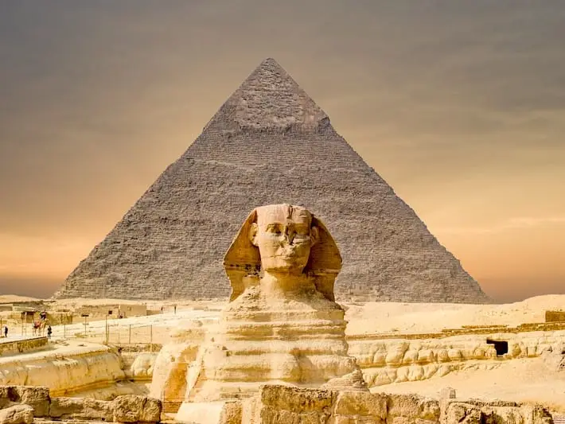

The Great Pyramids of Giza are one of the Seven Wonders of the Ancient World, standing as monumental symbols of ancient Egypt's remarkable engineering and architectural prowess. The largest of these, the Great Pyramid of Khufu, was originally 481 feet tall and was the tallest man-made structure on Earth for over 3,800 years.
Constructed over 4,500 years ago, these pyramids were built as tombs for the Pharaohs. The precision with which the stones were cut and arranged still baffles modern engineers. The Great Pyramid was built with over 2 million limestone blocks, each weighing several tons. The construction methods remain a mystery, as there is no definitive explanation for how such massive blocks were transported and positioned so accurately without the advanced technology we have today.
Many theories have been put forth regarding the purpose of the pyramids. Some suggest that the pyramids were aligned with specific stars or celestial bodies, serving as tools for religious rituals or astronomical observatories. Others believe that the pyramids represent a symbol of the Pharaoh's divine power and were intended to guide the souls of the kings to the afterlife.
← Back to Explore